Von Niemann Probe
 Teddy Warner
| Dec 2023
| 46–58 minutes
Teddy Warner
| Dec 2023
| 46–58 minutes
{kind=link}
An AVR-based Bluetooth telegraphing shoe insole that lets you play chess in the way Hans Niemann has been accused!
Project Sponsor
The development of the Von Niemann Probe was made possible by PCBWay, who provided the fabrication of the probe’s main board and nylon insole. Be sure to check out PCBWay.com for all your PCB prototyping, assembly, design, CNC, and 3D printing needs! Thank you to the wonderful folks at PCBWay for sponsoring this project!
On September 4, 2022, 19-year-old rising chess superstar, Grandmaster Hans Moke Niemann, shocked the chess world when he ended the 8-time World Champion, and arguably the greatest player in world history, Magnus Carlsen’s unprecedented 53-game win streak at the Sinquefield Cup in St. Louis, Missouri. Niemann added insult to injury by accomplishing this as the lowest-ranked player in the tournament while playing with the black pieces, which possess a slight, but crucially important, disadvantage at the highest levels of competition.
Soon after his loss, Carlsen withdrew from the Sinquefield Cup without explanation, a bizarre occurrence due to the remaining six rounds in the tournament. While chess enthusiasts on the internet grappled with possible reasons for Carlsen’s withdrawal, Carlsen posted the tweet below, depicting Portuguese football manager José Mourinho saying “If I speak I am in big trouble”, a brief innuendo to the accusations to come.
I've withdrawn from the tournament. I've always enjoyed playing in the @STLChessClub, and hope to be back in the future https://t.co/YFSpl8er3u
— Magnus Carlsen (@MagnusCarlsen) September 5, 2022
I've withdrawn from the tournament. I've always enjoyed playing in the @STLChessClub, and hope to be back in the future https://t.co/YFSpl8er3u
— Magnus Carlsen (@MagnusCarlsen) September 5, 2022
Carlsen’s message drove many chess fans around the globe quickly began to lob accusations of foul play at Niemann, who has had a history of cheating in online games, and speculate on how he could have cheated in an over-the-board match. A theory that Niemann used a wearable device to relay computer-generated moves was quickly popularized and became incredibly popular amongst chess fans and the broader internet. Despite the internet’s suspicions, no clear accusations were placed, nor did any solid evidence surface. Yet, on September 8th, 2022, Chess.com released the tweet seen below, confirming it had removed Hans Moke Niemann from its user base for cheating.
— Chess.com (@chesscom) September 8, 2022
— Chess.com (@chesscom) September 8, 2022
These direct allegations from Chess.com spurred further allegations against Niemann, as well as his confession to cheating on two separate occasions, both in online games, once at age 12 and another at 16. Yet, Niemann denied ever cheating over the board, even offering to “strip fully naked”16 or “to play in a closed box with zero electronic transmission”16 to prove his innocence.
To only further the drama, on Monday, September 26, 2022, the pair were re-matched in an online tournament in which Carlsen resigned after playing a single move. Later that night, Carlsen released his open accusations against Niemann claiming he believes that “Niemann has cheated more — and more recently — than he has publicly admitted.”18 Carlsen claims he derived his initial suspicions form Niemann’s rapid rise through the chess ranks. For reference, Niemann surged from being approximately 800 in the world, to within the top 50 over the 20 months leading up to the Sinquefield Cup. GM Hikaru Nakamura describes this rise as “unprecedented”14 and Chess.com claims that Niemann is the “fastest rising top player … in modern recorded history”13, yet others find it comparable to top junior ranked players. Carlsen outline in his formal accusation (found in the tweet below) that Niemann “wasn’t tense or even fully concentrating”18 while outplaying him using the black pieces “in a way I think only a handful of players can do”18 during the tournament.
My statement regarding the last few weeks. pic.twitter.com/KY34DbcjLo
— Magnus Carlsen (@MagnusCarlsen) September 26, 2022
My statement regarding the last few weeks. pic.twitter.com/KY34DbcjLo
— Magnus Carlsen (@MagnusCarlsen) September 26, 2022
The implications of such an unprecedented accusation against a player at the GM (Grandmaster) level are highly slanderous. Grandmaster Nigel Short notes that cheating at this level of chess is exceptionally rare, as any proven allegations would end a player’s career. GM Short told the BBC “I think in the absence of any evidence, statement or anything, then this is a very unfortunate way to go about things. It’s death by innuendo.”14 Furthering GM Short’s skepticism, Professor Kenneth Regan, widely considered to be the world’s leading expert on chess cheating, took it upon himself to analyze Niemann’s games and found no evidence of cheating.
Naturally, Niemann isn’t taking kindly to these slanderous accusations, and has filed a federal lawsuit accusing Carlsen of “maliciously colluding with others to defame [him] and ruin his career.”1 Niemann is after at least $100 Million in damages from defendants Carlsen, his company Play Magnus Group, the online platform Chess.com and its leader, Danny Rensch, as well as grandmaster Hikaru Nakamura. The court filing, found below, accuses GM Nakamura and Chess.com of bolstering Carlsen’s “egregious” claims through their platforms.
Niemann’s counterattack hasn’t ended in his pursuit of reparations, Niemann claims Carlsen couldn’t handle losing to him, implying through his court filing that Carlsen’s actions further support his notorious “inability to cope with defeat.”20 The court filing states that Carlsen’s actions were taken in an attempt to solidify his status as “king of chess”20 so he could complete his company’s buyout by Chess.com - a $82.9 million acquisition.21
Niemann’s victory over the world champion, “should have propelled Niemann’s career to the next level and allowed him to continue realizing his enormous potential as the next great American chess player.”20 Yet, “Unbeknownst to Niemann at the time, Defendants would do whatever it took to ensure that this would never happen.”20
It’s worth mentioning again that Niemann has publically admitted to cheating with aid from electronic devices in online matches, once at age 12 and again at age 16. Niemann referred to one of these instances as “an absolutely ridiculous mistake”22, while maintaining that he had never cheated in a tournament with prize money.
A couple of weeks after their initial accusations, Chess.com released a formal, 72-page report (found below) outlining an investigation into Niemann’s play, and alleging that Niemann has likely cheated with electronic aid in more than 100 games, and as recently as 2020, including in matches where money was on the line. The magnitude of Niemann’s alleged cheating scandal, as presented in Chess.com’s report, proves to be much larger and longer-lasting than Niemann publically admitted. Chess.com’s investigation relied on a variety of analytical tools to compare the moves of Niemann to those recommended by chess engines, and noted “many remarkable signals and unusual patterns in Hans’ path as a player.”13 The site claims that “while [they] don’t doubt that Hans is a talented player, we note that his results are statistically extraordinary”13, and their investigation into Niemann’s gameplay has uncovered “blatant cheating”.13 The report states that Niemann privately confessed to these allegations and that his Chess.com account was subsequently closed in 2020.
In a private letter to Niemann, Chess.com’s Chief Chess Officer, Danny Rechsch writes “We are prepared to present strong statistical evidence that confirms each of those cases above, as well as clear ‘toggling’ vs ‘non-toggling’ evidence, where you perform much better while toggling to a different screen during your moves”.13 While the report outlines that Chess.com has historically treated bans as a private matter, the ongoing accusations and Niemann’s ban from the site’s Global Championship spurred the platform to provide the investigation that provided justification for their decisions.
While this evidence against Niemann appears to be overwhelming, it’s important to remember that the Sinquefield Cup is an over-the-board tournament. Cheating online and over the board are two entirely separate entities, no amount of online cheating in the world provides sufficient reason to accuse Hans of over-the-board cheating, as the act itself is a different task that would require extreme preparation to achieve. Thus, in face of a lack of evidence to support over-the-board cheating allegations against Niemann, the Von Niemann Probe was born. In an attempt to further the investigation into this scandal, we developed an AVR-based Bluetooth telegraphing shoe insole to test the feasibility of creating and using an over-the-board chess cheating aid.
Cheating in Chess
Cheating in chess, whether online or over the board, is wrong and ruins the game for everyone. This project has been published to showcase the possibility of such a device’s existence/use, and should not be recreated with the intent of using it for genuine foul play.
Name Orgins
The Von Niemann Probe is named after a theoretical self-replicating space probe known as the Von Neumann Probe, named after legendary 20th century Hungarian-American mathematician John Von Neumann. The Von Neumann Probe is regarded as the optimal way to explore the cosmos, as it can mine asteroids and leverage the exponential growth of its progeny to more efficiently visit star systems. And, coincidentally, probes are also medical devices that can be used to explore one’s bowels. Thus, we settled on naming our device the Von Niemann Probe.
Telegraph Design¶
PCB Design & Integration¶
At the heart of the Von Niemann Probe lies an AVR ATtiny 412-based Bluetooth telegraph. This PCB is capable of interpreting Bluetooth serial data from our chess engine (see Step 3), and translating the signal to pulses of a vibration motor. Before starting any PCB design work in Autodesk EAGLE, I took some time to write out these expectations for the systems operating principle and then began the PCB schematic. The VNP mainboard is a barebones ATtiny 412 setup, including voltage regulation and smoothing capacitors, as well as headers for connection to a Bluetooth module, vibration motor, and battery power.
The schematic includes headers for an HC-06, with serial connections to the ATTiny 412, and a shared power line with both the IC and Vibration Motor. This vibration motor is wired both to common GND on the PCB, as well as to Digital Pin 2, allowing the IC to pulse the motor to convey moves in morse code.
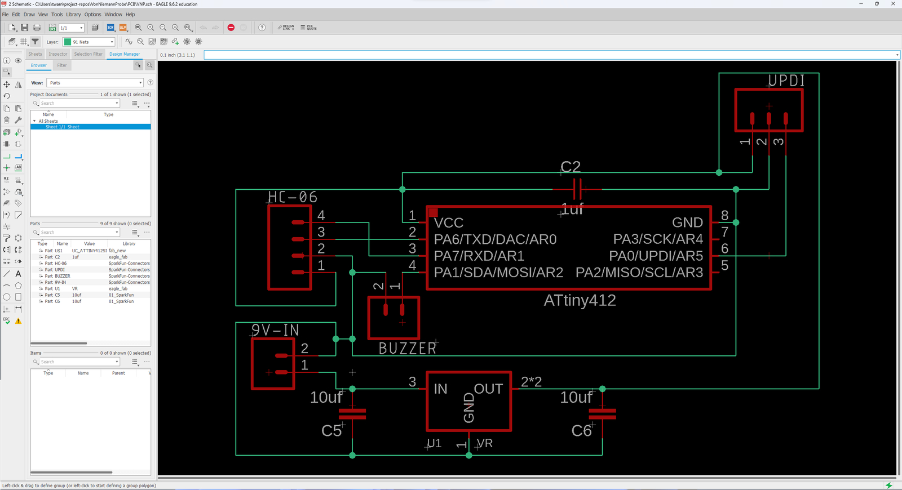
With this schematic done, I moved on to generating my final board file. The PCB is built around the rectangular nature of the HC-06 Bluetooth module - one of these modules is placed in the center of the PCB, allowing for an as-compact-as-possible footprint ideal for fitting in the VNP’s discrete insole body (see Step 2). Just above the HC-06 module lies the ATtiny 412 circuit and UPDI programming pins, as well as a cutout and mounting points for the telegraph’s vibration motor. The entire PCB is designed to be mounted inside the VNP insole with M3 screws and has been designed to maintain a large, shared surface area with the 3D-printed insole to ensure the transfer of vibration from the telegraph.
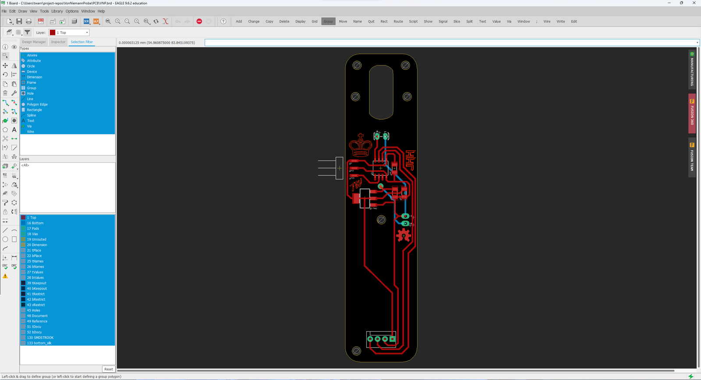
Parametric Shoe Insole¶
To prove the feasibility of the accusations placed against Hans Niemann, the Von Niemann Probe (VNP) must be robust enough to see consistent use, while remaining discrete enough to not be detected. With this in mind, we selected to place our Bluetooth telegraph inside the body of a parametric shoe insole. The VNP was designed in Autodesk’s Fusion 360, and makes heavy use of the software’s Parametric Engine, allowing a custom insole to be generated for all foot sizes. Using the shoe size standards found in the table below, an insole may be generated to fit your exact foot dimensions. Note - the sizes included in the table below are Mens, as that is the style of shoe both Jack and I wear - be sure to convert your shoe size accordingly.
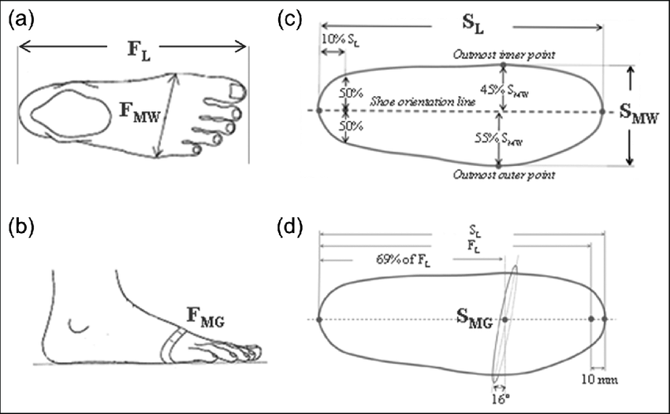
| US Size | UK Size | European Size | Japanese Size | Length (SL) | Width (SMW) |
|---|---|---|---|---|---|
| 6 | 5.5 | 39 | 25 | 23.5cm | 8.9cm |
| 6.5 | 6 | 39/40 | 25.5 | 24.1cm | 9cm |
| 7 | 6.5 | 40 | 26 | 24.4cm | 9.2cm |
| 7.5 | 7 | 40/41 | 26.5 | 24.8cm | 9.4cm |
| 8 | 7.5 | 41 | 27 | 25.4cm | 9.5cm |
| 8.5 | 8 | 41/42 | 27.5 | 25.7cm | 9.7cm |
| 9 | 8.5 | 42 | 28 | 26cm | 9.8cm |
| 9.5 | 9 | 42/43 | 28.5 | 26.7cm | 10cm |
| 10 | 9.5 | 43 | 29 | 27cm | 10.2cm |
| 10.5 | 10 | 43/44 | 29.5 | 27.3cm | 10.3cm |
| 11 | 10.5 | 44 | 30 | 28.9cm | 10.5cm |
| 11.5 | 11 | 44/45 | 31 | 28.3cm | 10.6cm |
| 12 | 11.5 | 45 | 32 | 28.6cm | 10.8cm |
| 12.5 | 12 | 45/46 | 29.2cm | 11cm | |
| 13 | 12.5 | 46 | 29.5cm | 11.1cm | |
| 13.5 | 13 | 46/47 | 30.2cm | 11.3cm | |
| 14 | 13.5 | 47 | 31cm | 11.4cm | |
| 14.5 | 14 | 47/48 | 31cm | 11.6cm | |
| 15 | 14.5 | 48 | 31.4cm | 11.7cm |
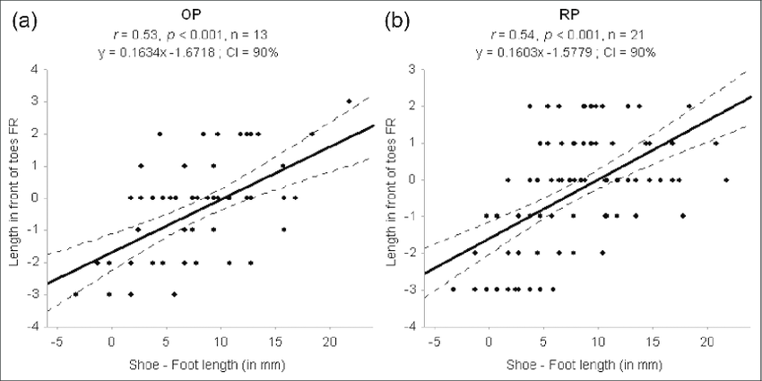
A custom insole will be generated after updating the model with your foot Length (SL) & Width (SMW) via Fusion’s Change Parameters tool. Paste in your foot length (SL) in the InsoleLegnth expression input, and repeat with your foot width (SMW) and the InsoleWidth expression input.
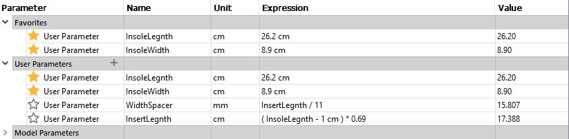
After establishing the model’s parameters and extruding a basic shape, I drafted the insole’s outer edge to allow the insole to fit the angled inner walls of shoes, before using Fusion 360’s Surface workspace to ad a 3D profile to the top of the insole.
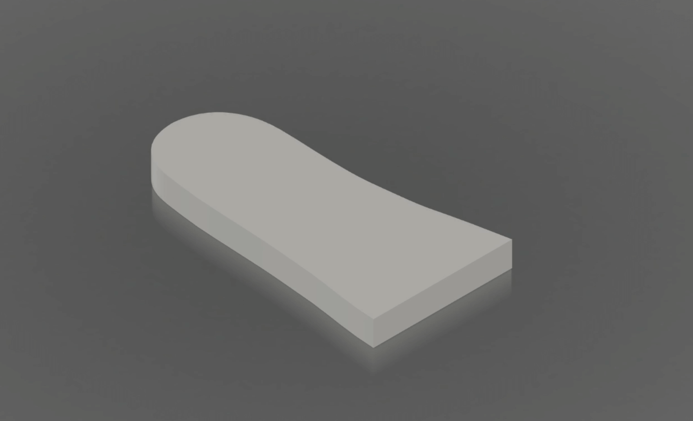 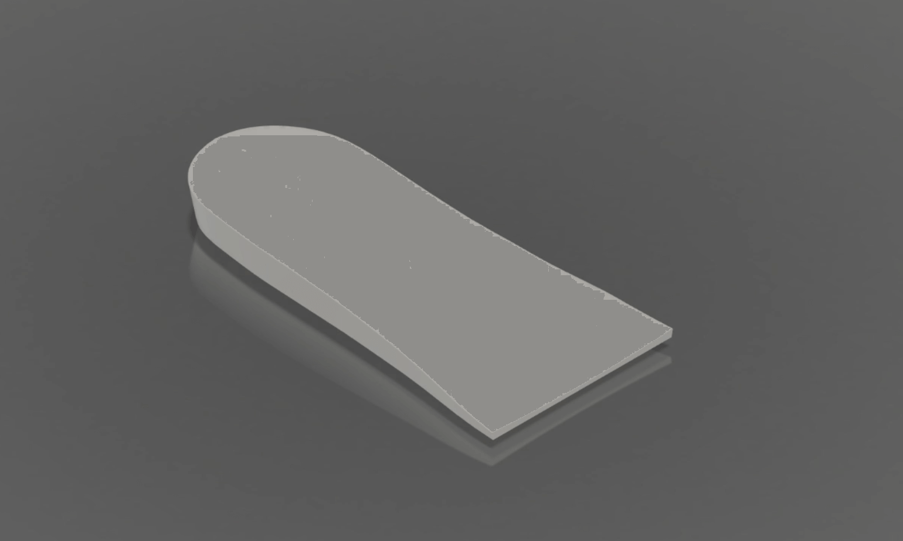
The insole consists of two main parts, the body which is the bulk of the insole itself, and the lid, which screws to the bottom of the body, covering the electronics compartment. The body of the insole consists of mounting points for the main PCB, as well as a 1000mah LiPo battery, a USB-C LiPo charging board, a power switch, and a 3.3v to 5v boost converter. The lid not only hides the VNP’s electronics system from sight but also redistributes the load placed upon the insole when a user is standing on it.
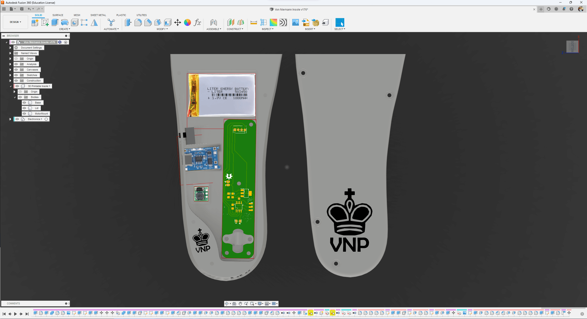
Chess Engine¶
The Von Niemann Probe is useless without a competent artificial intelligence running the show behind the scenes, obviously requiring a hefty amount of code to get it to work properly. I decided to build the brains around Stockfish, a famous chess engine that already has a functioning Python integration and also happens to be the highest-rated engine at the time of writing. For reference, the engine plays at a 4000 level, while the current highest-rated player, Magnus Carlsen, is currently sitting at about 3200. Safe to say, Stockfish is more than sufficient for the players our insole will encounter who are obviously considerably worse than Carlsen.
Python Dependencies
Various Python dependencies are needed to run the chess engine script, but overall the installation is pretty lightweight. Install commands for all Python dependencies are below, any release past Python 3.7 will work.
Downloading & Configuring Stockfish¶
First, I downloaded Stockfish and extracted it locally on my Windows PC. I used Version 15 in this project. A more current version can be downloaded from stockfishchess.org or use this permanent download link of the version that I used during development.
Next, I researched the Stockfish Python module and integrated it into a continuous loop in Python that would allow it to play games repeatedly without requiring the relaunching of the code. The module is pretty simple to instantiate, but it does feature a few optional parameters that can regulate its strength and how much hardware it occupies locally.
stockfishPath = "C:/…" #replace with the path to your Stockfish exe.
#Note - the path may only contain forward slashes, no backslashes.
I began by adding a path variable to my Python program that stores the local path of the Stockfish installation. The path can be found by navigating to the folder that stores Stockfish and finding the .exe file inside of the folder. I then placed this path into the variable, making sure to replace the backslashes that windows copies with for forward slashes. The code will not run with backslashes.
fish = Stockfish(r"{0}".format(stockfishPath),
depth=18, parameters={"Threads": 4, "Hash": 256, "UCI_LimitStrength": "false"}) #stockfish object declaration, can regulate strength
print("WDL Accepted " + str(fish.does_current_engine_version_have_wdl_option()))
I then configured Stockfish inside of the program. The above snippet instantiates stockfish, creating an object called “fish” that can be called using the Python Stockfish module.
The Python Stockfish module also features a function that prints a Unicode display of the current board state! This proved very useful during debugging to follow along with games that are not being played physically.
I then created an infinite loop that takes the side of the player wearing the insole that launches one of two loops that allow games to be played inside of the playGame() function.
def playGame(side):
global legal; global legalMoves
global board; global isMate; global morseMove;
mate = False
turns = 0; i = 0
board = chess.Board()
print("fish playing as " + side)
Several declarations occur at the top of the playGame() function regardless of what side Stockfish is on. These lines help keep track of legality and reset the state of the board in the two modules that track it. The importance of these modules is detailed later on in this section.
if side == "white":
while mate == False:
bestMove = fish.get_best_move(1000)
fish.make_moves_from_current_position([bestMove]);
chessMove = chess.Move.from_uci(bestMove) #create chessMove
print("whitefish plays " + bestMove)
I decided to start by writing code for games for when the engine is generating moves for the white pieces. Stockfish will immediately generate a move in this case so this made early development a bit easier. The above snippet generates the optimal move from the starting position and plays it.
print("black move:") #request player move
move = input()
#The above lines request the move of the engine's opponent that is playing on the black pieces.
After black’s move is input, one turn has passed, and now it is time for the engine to respond to the human player’s move. But before that can happen, the program needs to check the legality of the Stockfish move. If the Stockfish module is passed an illegal move that cannot be played given a current board position, it crashes. So I needed to create a function to test the legality of moves before passing them to the Stockfish module to avoid this potential point of failure.
Checking Move Legality¶
While the Python Stockfish module is robust and does have many useful features, it does not natively feature a function to check the legality of a move. As such, I decided to add the python-chess module to run a legality check on each move before passing it to Stockfish, prompting the user to enter another move if a move is not legal, preventing crashes due to misinput.
The above function call creates a Board object that allows for the calling of the many functions included in the python-chess module.
The python-chess module features a board.is_legal() function that checks the legality of a formatted move object given the current state of a board object. It returns a boolean that reflects the legality of a move. However, it needs to be passed a chess.Move object which must be created using letters and numbers that can appear in chess moves. As such, any input that is incorrect, say “n9z0” would not create a move object and would trigger a crash. Therefore, it is necessary to verify that input only contains properly formatted characters that can actually exist in a chess move before trying to use the is_legal() function.
badChars = ["i", "j", "k", "l", "m", "n", "o", "p", "q", "r", "s", "t", "u", "v", "w", "x", "y", "z",
"9", "0"] #chars that can't be in a legal chess move
I started by creating a dict that contains all of the characters that cannot appear in a legal chess move.
for char in move: #check if badChars exist in move
i = 0 #reset iterating var
while i < len(badChars):
badChar = badChars[i]
if char == badChar:
print(char + ' is ILLEGAL')
noBadChars = False #set bool to reflect bad char
if char.isalpha() == True:
charCount += 1 #reflect that at least 1 char in string
if char.isdigit() == True:
numCount += 1 #reflect that at least one number in string
i += 1
#print(char + "is legal") #debug bad chars function
I then wrote some code to iterate through each character in a move received as input and verify that it contains only legal characters.
if len(move) != 4 and len(move) != 5: #solve edge case where small string doesn't break other rules
noBadChars = False;
I also added a quick check to verify that a move actually contains 4 characters. A move object cannot be created by any other number of characters, so this check is useful in preventing crashes due to misinput.
if noBadChars == True: #only creative move objects if correct formatting
myMove = chess.Move.from_uci(move)
legal = board.is_legal(myMove)
print("Legal? " + str(legal))
If the user input does not contain any illegal characters and is 4 characters in length, then it can be made into a chess.Move object in the python-chess module and passed to the is_legal() function. The above snippet does precisely that.
if legal and noBadChars: #move can only happen if legal and doesn't contain illegal chars
fish.make_moves_from_current_position([move])
chessMove = chess.Move.from_uci(move)
board.push_san(move)
return #back to game loop
If the player’s move is legal, then it is added to the games being tracked by python-chess and Stockfish. After the move is played, the program returns to the playGame() parent function and the game will continue with a move from Stockfish.
else:
print("illegal move, input new move:")
newMove = input()
getPlayerMove(newMove)
return #back to game loop
If the move is not legal, the function getPlayerMove() function will recursively call back to itself until a legal move is received, at which point it will return to the playGame() parent function and the game will continue.
Morse Code Translation¶
After getting the legality function to work, I began focusing on solving the core challenge of this project: sending the moves generated by Stockfish to a shoe insole. I initially wrote code to translate the moves into Morse Code, but quickly discovered that due to the short nature of chess moves I could save a lot of time by just pulsing a vibrating motor for each additional index in the alphabet or number line a certain character occupied.
For example, a C in morse code is --, which would take 10 seconds to buzz assuming a dot length of 1 second where a 1:3 dot:dash ratio is established with a wait time of 1 dot between each character. This is standard. However, a simple *** of 0.1 second pulses with 0.05 second pauses in between accomplishes the same thing in much less time and is easily understood to be a C, because chess moves will always follow a character:number:character:number format. As such, I decided that this way would be faster and would not require me to learn 16 characters of Morse Code. Both encoding versions are in our Github repository for the project if for some reason you prefer Morse Code. For the sake of concision I am only going to include the code for the shorter encoding method that I described which is also the one that is used in all of our testing videos.
morseDict = { 'a':'.', 'b':'..',
'c':'...', 'd':'....', 'e':'.....',
'f':'......', 'g':'.......', 'h':'........',
'1':'.', '2':'..', '3':'...',
'4':'....', '5':'.....', '6':'......',
'7':'.......', '8':'........'}
I began by creating a dict of all of the dot values for each letter and number.
def toMorse(move): #convert move to morse code
ret = "" #empty morse conversion
newConvert = "" #empty mid-conversion string
for char in move:
#print("converting " + char) #debug print
newConvert = morseDict[char] #take key of char index in morse dict
ret += newConvert + ' ' #add morse for new char to morse string
print("Morse-Converted Move: " + ret)
return ret
The above function takes a move played by Stockfish and converts it to a format that is almost ready to be sent via Bluetooth to the insole.
At this point the move “e2e4” would look like ”..... .. ..... ....” meaning it is ready to be pulsed to the wearer of the device once it is sent to and received by the insole.
Sending Moves Via Bluetooth¶
The job of the Python program each move ends with the sending of the optimal move to the user of the insole. This is accomplished by connecting the machine that the program is running on to the HC-05 or HC-06 Bluetooth module located in the device and sending the moves via a COM port.
Whenever you connect to the Bluetooth module, it will take on a different COM port. This address can be found in Windows settings by searching “Device Manager” or pressing ⊞+x and navigating to Device Manager. Once in this interface, navigate to “Bluetooth” and find the Bluetooth module.
Once you find the port, change the value of the port string to whatever value your computer reflects. The Bluetooth module will have a couple of values that it takes on on your machine, so you might not have to change it every time you reconnect, but it is certainly best practice to check just to make sure. These modules can be pretty buggy sometimes, but usually just forgetting the device and reconnecting solves the problem!
The above snippet establishes a connection to the Bluetooth module at 9600 baud using the pre-specified port and prints a confirmation. After this runs successfully, a game can be started and the moves will be sent to the shoe insoel automatically.
def sendMove(morse):
print(morse) #print morse move with spaces replaced with 9 - easier to parse on arduino side as empty bytes hard to work with
for char in morse:
tempChar = char.encode() #temporary placeholder set to current char in morse move
ser.write(tempChar) #send individual character of final morse message encoded in utf-8
print("sent move")
return
The above function is responsible for sending the moves. During testing, I found that sending one byte at a time is easier to parse on the insole, so this function simply iterates through the converted string and sends each byte one by one. After all of the bytes are sent, it returns to the parent function and the game continues.
I realized that spaces can behave weirdly when sent over Bluetooth using UTF-8, so instead of further researching the problem I simply set all of the spaces to a value that cannot appear in a chess move before sending them to the insole. 9’s are simply treated as a constant delay in the C++ code that runs on the insole.
At this point, the work of the Python function is complete. A player move has been input, checked for legality, and an engine move has been generated, converted, and sent to the insole. Once the player wearing the device makes the move on the board and the human player responds, this process will continue until Stockfish triumphs!
| Bluetooth Interfacing Chess Engine | |
|---|---|
1 2 3 4 5 6 7 8 9 10 11 12 13 14 15 16 17 18 19 20 21 22 23 24 25 26 27 28 29 30 31 32 33 34 35 36 37 38 39 40 41 42 43 44 45 46 47 48 49 50 51 52 53 54 55 56 57 58 59 60 61 62 63 64 65 66 67 68 69 70 71 72 73 74 75 76 77 78 79 80 81 82 83 84 85 86 87 88 89 90 91 92 93 94 95 96 97 98 99 100 101 102 103 104 105 106 107 108 109 110 111 112 113 114 115 116 117 118 119 120 121 122 123 124 125 126 127 128 129 130 131 132 133 134 135 136 137 138 139 140 141 142 143 144 145 146 147 148 149 150 151 152 153 154 155 156 157 158 159 160 161 162 163 164 165 166 167 168 169 170 171 172 173 174 175 176 177 | |
Bluetoothless Implemetation
| Chess Engine | |
|---|---|
1 2 3 4 5 6 7 8 9 10 11 12 13 14 15 16 17 18 19 20 21 22 23 24 25 26 27 28 29 30 31 32 33 34 35 36 37 38 39 40 41 42 43 44 45 46 47 48 49 50 51 52 53 54 55 56 57 58 59 60 61 62 63 64 65 66 67 68 69 70 71 72 73 74 75 76 77 78 79 80 81 82 83 84 85 86 87 88 89 90 91 92 93 94 95 96 97 98 99 100 101 102 103 104 105 106 107 108 109 110 111 112 113 114 115 116 117 118 119 120 121 122 123 124 125 126 127 128 129 130 131 132 133 134 135 136 137 138 139 140 141 142 143 144 145 146 147 148 149 150 151 152 153 | |
Telegraph Code¶
Once a formatted move is sent to the shoe insole, it needs to use its vibrating motor to discretely tell its wearer what the best move is. As all of the major processing and translation is done in Python, all the ATTiny412 microcontroller in the insole does is receive a move via Bluetooth, parse it, and buzz it to the user, making its job considerably simpler.
C++ Setup & Initialization¶
#include <SoftwareSerial.h> //software serial library, native in base installation of ide
SoftwareSerial HC06(0, 1); //HC06-TX Pin 10, HC06-RX to Arduino Pin 11
The HC-06 cannot use the normal serial pins, so the SoftwareSerial library is required. The above snippet imports the library and establishes a transmitting line on pin 0 and a receiving line on pin 1.
These lines establish the pin of the buzzer and specify the length of one dot. Because of the encoding method used here, it is not necessary to specify the length of a dash. The length of a dot is also used for pauses here, but another time could be added to further optimize the buzzing of moves.
void setup() {
HC06.begin(9600); //Baudrate 9600 , Choose your own baudrate
pinMode(buzzerPin, OUTPUT);
}
These lines establish a connection between the Bluetooth module and the machine that is running the Python program. It also initializes the buzzer as an output.
Receiving & Transmitting Moves¶
Once the Bluetooth module is connected to the Python program and the buzzer is setup, the insole is ready to receive moves and buzz them on the internal vibrating motor.
void loop(){
if(HC06.available() > 0)
{
char receive = HC06.read();
if(receive =='.'){
digitalWrite(buzzerPin, HIGH);
delay(dotLength);
digitalWrite(buzzerPin, LOW);
delay(dotLength);
}
if(receive =='9'){
digitalWrite(buzzerPin, LOW);
delay(dotLength * 2);
}
else {
digitalWrite(buzzerPin, LOW);
delay(5);
}
}
}
The Python program sends bytes one at a time and they simply pile up in the stack on the ATTiny412. This allows us to interact with each byte one at a time and not touch the other ones until they are ready to be buzzed. This prevents the need for any local strings or storage for the moves, as each byte in a move is no longer necessary after it is buzzed once, which means that accessing these bytes just once is sufficient.
The local char, receive, is set to each byte contained in the move, in the order that they are received. With our encoding method, each byte is either a “.” or a “9” or empty, so these are the only conditions necessary that will result in a buzz. Sometimes junk data is sent, so it is better to leave this final condition open-ended as an else statement instead of including another conditional checking for null bytes, as junk data would result in a crash in this case.
Fabrication & Testing¶
I began the fabrication of the Von Niemann Probe through some prototype PCB milling on the Bantam Tools Desktop CNC Milling Machine …
Leveraging these machines would allow me to test early designs before ordering final boards from PCBWay, allowing me to ensure their functionality early on in the design process. This process also makes it considerably easier to make changes, as I can test multiple iterations within several hours of each other, including the time to solder each board!
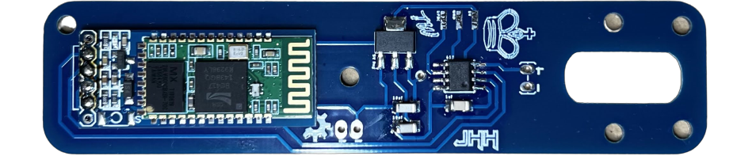
Next up, 3D Printing … and a lot of it. All prototype prints for the Von Niemann Probe were done on a Prusa I3 MK3S+ equipped with an 0.4mm E3D Nozzle X from White PETG.
Similar to the PCB prototyping, I fabricated several prints while iterating on the insole’s CAD, before ordering the final iteration from PCBWay. Each print required over 14 hours of print time and numerous hours to complete the necessary changes to the design.
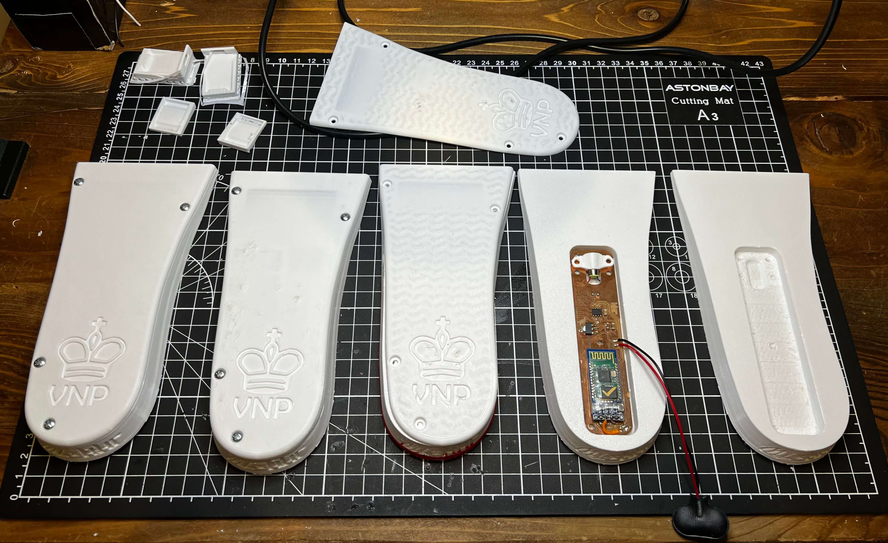
After finally arriving at a version of the insole that I was satisfied with, I was ready to assemble the device …
Leaving me with the final product below! 
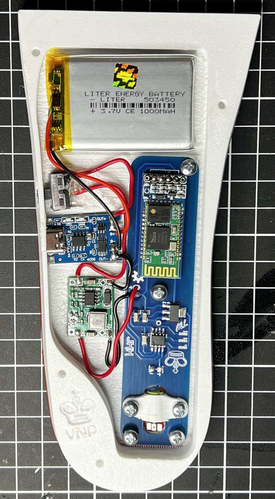 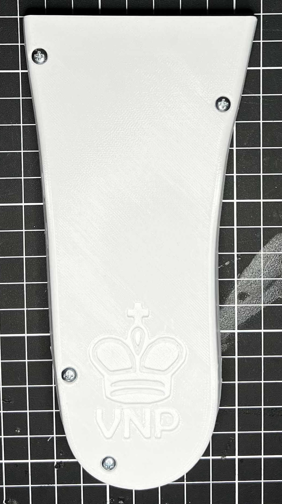
-
https://www.npr.org/2022/10/21/1130442319/hans-niemann-sues-magnus-carlsen-for-100-million-accusing-him-of-defamation ↩
-
https://youtu.be/eg5G1A_mTFg ↩
-
https://twitter.com/hansmokeniemann ↩
-
https://futurism.com/von-neumann-probe ↩
-
https://ww1.microchip.com/downloads/en/DeviceDoc/ATtiny212-412-DataSheet-DS40001911B.pdf ↩
-
https://components101.com/sites/default/files/component_datasheet/HC06%20Bluetooth%20Module%20Datasheet.pdf ↩
-
https://components101.com/wireless/hc-06-bluetooth-module-pinout-datasheet ↩
-
http://www.sizecharter.com/clothing-fit-and-measurement/understanding-shoe-sizing ↩
-
https://www.researchgate.net/figure/The-Mean-of-Absolute-in-mm-and-Relative-in-FL-Foot-Dimensions-for-Both-Genders-a_tbl2_327021689 ↩
-
https://www.researchgate.net/figure/Measurements-of-the-foot-and-the-inner-shoe-dimensions-a-Foot-Length-FL-and-Foot_fig5_280976288 ↩
-
https://www.protalus.com/blogs/news/how-to-measure-feet ↩
-
https://www.magnuscarlsen.com/en ↩
-
https://www.chess.com/blog/CHESScom/hans-niemann-report ↩↩↩↩↩
-
https://www.bbc.com/news/world-63043023 ↩
-
https://cse.buffalo.edu/~regan/chess/fidelity/data/Niemann/ ↩
-
https://twitter.com/MagnusCarlsen/status/1574482694406565888?s=20 ↩↩↩
-
https://www.wsj.com/articles/chess-cheating-hans-niemann-report-magnus-carlsen-11664911524 ↩
-
https://storage.courtlistener.com/recap/gov.uscourts.moed.198608/gov.uscourts.moed.198608.1.0.pdf ↩↩↩↩
-
https://frontofficesports.com/top-chess-player-platform-join-forces-in-82-9m-deal/ ↩
-
https://www.washingtonpost.com/sports/2022/10/05/chess-com-investigation-cheating-hans-niemann-magnus-carlsen/ ↩
-
https://www.youtube.com/watch?v=5uDM3fPeNFM&t=224s ↩
-
https://www.youtube.com/watch?v=QNuu8KTUEwU&t=390s ↩
-
https://www.reddit.com/r/chess/comments/x6ixud/during_magnus_carlsens_current_unbroken_streak_as/ ↩
-
https://pawnalyze.com/chess-drama/2022/09/05/Analyzing-Allegations-Niemann-Cheating-Scandal.html ↩
-
https://www.chess.com/news/view/hans-niemann-us-junior-championship-annie-wang ↩
-
https://www.mid-day.com/sports/other-sports/article/world-champion-magnus-carlsen-quits-game-amid-cheating-allegations-23246759 ↩
-
https://www.fide.com/news/1968 ↩
-
https://www.youtube.com/watch?v=TkUkvLqHfZM ↩
-
https://www.youtube.com/watch?v=9wtvXoXh0VU ↩
-
https://www.chess.com/events/2022-sinquefield-cup/03/Carlsen_Magnus-Niemann_Hans_Moke ↩
-
https://www.youtube.com/watch?v=CJZuT-_kij0 ↩
-
https://www.youtube.com/watch?v=VptbNKbHQiM&t=5s ↩
-
https://www.youtube.com/watch?v=O6ML2b7IdD4&t=2s ↩
-
https://www.youtube.com/watch?v=qjtbXxA8Fcc ↩
-
https://www.youtube.com/watch?v=uCzwLk6fXXs ↩
-
https://www.youtube.com/watch?v=LkXDhw-TuGw ↩
-
https://www.nationalworld.com/news/offbeat/how-do-you-cheat-at-chess-cheating-player-hans-niemann-scandal-play-online-board-3870066 ↩
-
https://www.nytimes.com/2022/12/04/business/chess-cheating-scandal-magnus-carlsen-hans-niemann.html ↩
-
https://www.wsj.com/articles/chess-cheating-magnus-carlsen-hans-niemann-11663751262?mod=article_inline ↩
-
https://www.buzzfeednews.com/article/kelseyweekman/chess-cheating-anal-beads-conspiracy-hans-niemann ↩
-
https://www.youtube.com/watch?v=lpfWGyvO80o ↩
-
https://www.youtube.com/watch?v=GLwyhmmEoAQ ↩
-
https://www.youtube.com/watch?v=umaHIQJY6Tw ↩
-
https://www.youtube.com/watch?v=aDUmS_MJceU ↩
-
https://www.republicworld.com/world-news/rest-of-the-world-news/elon-musk-claims-niemann-may-have-used-anal-beads-to-beat-carlsen-in-chess-championship-articleshow.html ↩
-
https://www.newsweek.com/hans-niemann-magnus-carlsen-chess-sex-toy-scandal-1749903 ↩
-
https://www.youtube.com/watch?v=HdHWAuQRG7E ↩
-
https://www.youtube.com/watch?v=J4_e12Md4Fg ↩
-
https://www.youtube.com/watch?v=XjupJslRj5E ↩
-
https://twitter.com/nigelshortchess/status/1573434084239593481 ↩
-
https://twitter.com/hansmokeniemann/status/1583164606029365248 ↩
Enter your email to receive the occasional update.